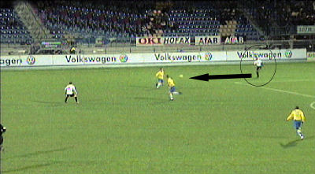
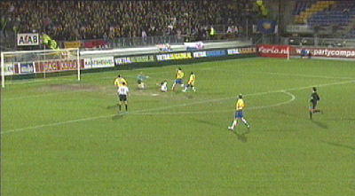
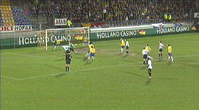
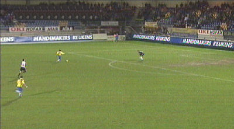
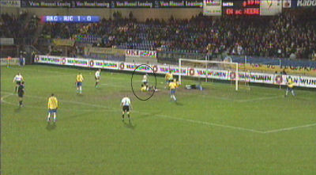
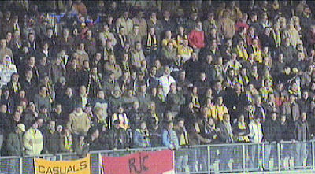
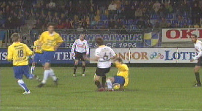
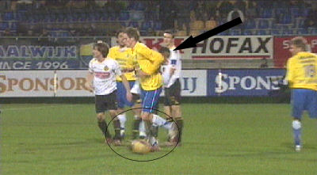
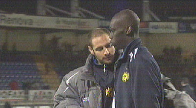

|
RKC
- Roda JC (1-0) 28 februari 2007
|

Kah heeft de bal van Castro ontvangen en wil op Meeuwis passen. Hij
let niet goed op en speelt de bal in de voeten van Van den Bergh die
"dankjewel" zegt en 1-0 scoort: (6').

Schot van dichtbij door Agustien dat knap gered wordt door Lemmens,
de doelman van RKC.

Schot van Oper op.... Lemmens.

Roda dicteert en voor RKC zijn er slechts countermogelijkheden
zoals hier. Garcia komt vrij voor Castro maar weet niet te scoren.

In de verdere wedstrijd blijft het verhaal gelijk: RKC krijgt enkele
prima counterkansen en Roda breekt op de muur van RKC zoals
hiet waar een schot van Ramzi gekeerd wordt door de niet te
passeren Lemmens.

Een enorme tegenvaller voor de bijna 800 Roda-supporters.

Harde overtreding op Meeuwis...

... die beantwoord wordt door Agustien die daarvoor geel krijgt.

Bodor troost Kah.
Roda ligt uit de beker en kan zich volledig op de competitie richten.
Over dik twee weken is de volgende editie van RKC - Roda JC...
© Koempels Pleasure Dome
|